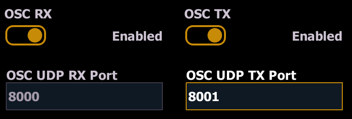
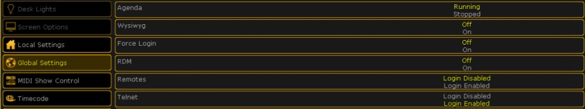

User manual
LightDori guide
A practical walkthrough for patch lists, print-ready PDFs, and Vectorworks exchange. Written for lighting designers, production electricians, and shop teams.
1. Overview
LightDori is a desktop workspace for lighting production data. Use it to build and edit fixture sheets, export patch documents, and keep Vectorworks data in sync without living inside spreadsheets.
- Windows and macOS desktop builds
- Offline-friendly for theatre, tour, and shop floors
- Core loop: Sheet → Patch PDF → Vectorworks / console handoff
2. Getting started
- Launch LightDori and sign in from the hub when prompted.
- Choose New File or open an existing project.
- Pick a fixture start mode: blank sheet, import existing data, or sample data.
- Open the Sheet workspace to begin editing channels, addresses, and types.
Theme and app preferences can be previewed in Settings. Changes apply permanently only after you save settings.
3. Sheet workspace
The Sheet is the main fixture table. Edit mode lets you add, delete, duplicate, and rearrange rows or columns.
- Edit — unlock cell editing and row tools
- Filter / Sort — focus positions or reorder before print
- Auto Universe — help assign DMX universes from addresses
- Export — CSV, XML, MVR, ASCII, and PDF document paths
Common fields include Channel, Device Type, Universe / Address, Position, Color, and UID. Keep UIDs stable when syncing with Vectorworks.
4. Patch documents
Patch Document builds a print-ready PDF (instrument schedule / patch list) from the current sheet selection.
- Choose the columns to include and set title, notes, and date styles.
- Preview the layout, then export PDF.
- Exported PDFs can be collected in the PDF Store for later merge.
Use this for shop handouts, booth patch tables, and production meetings. Title fonts are chosen for consistent Windows / macOS output.
5. Vectorworks sync
LightDori exchanges fixture data through a shared JSON file so LD and VW stay aligned.
- Sync Now — write LightDori devices to the exchange file
- Import — Merge updates matching fixtures; Overwrite replaces the sheet
- Live sync — poll for VW exports and apply when available
If the exchange file is missing, export from Vectorworks first. Close the sync panel when prompted so pending keystroke nudges can apply on Windows setups that use them.
6. Import & export
Typical formats supported in the Sheet / file workflows:
- CSV / Excel / JSON / XML
- MVR fixture packages
- ASCII (ASC) patch and cue imports
- Patch Document PDF and Magic Sheet PDF exports
After import, verify Channel / Address collisions and Position filters before sending anything to a console.
7. Console connection
LightDori can connect to lighting consoles. Use the Eos OSC ports or MA Telnet login below.
Eos connection
- Open Setup → System → Show Control → OSC.
- Enable OSC RX and OSC TX.
- Set OSC UDP RX Port to 8000.
- Set OSC UDP TX Port to 8001.

MA connection
- Open Setup → Console → Global Settings.
- Set Telnet to Login Enabled.

8. Tips & troubleshooting
- After UI changes, fully quit and relaunch so the WebUI rebuild is loaded.
- macOS builds need a Mac venv and Node for packaging — do not copy a Windows venv.
- If PDF titles look different across machines, use the latest build with shared sans fonts.
- Display scaling changes (125% / 150%) may need an app restart.
- Questions: hello@lightdori.app